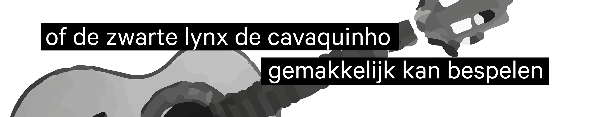
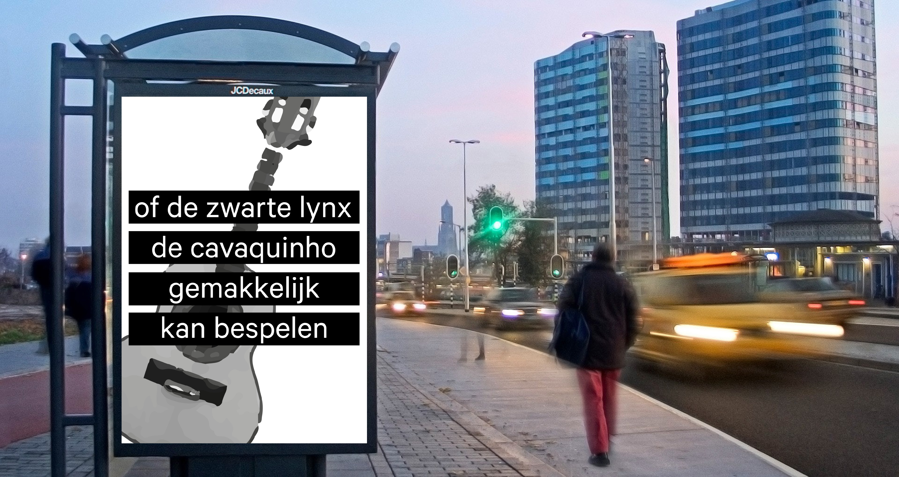
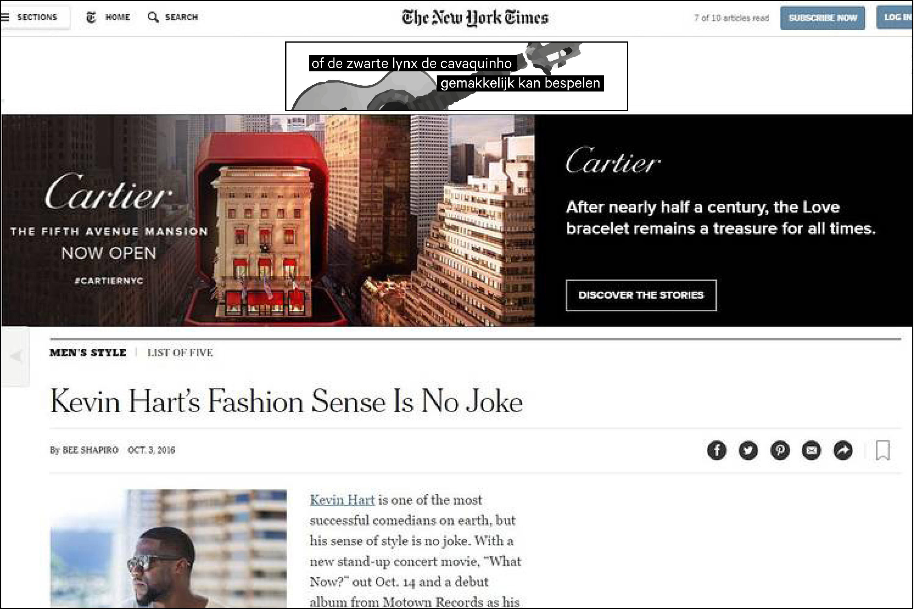
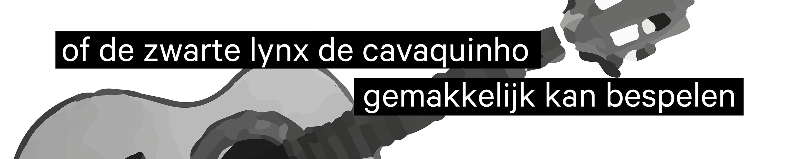
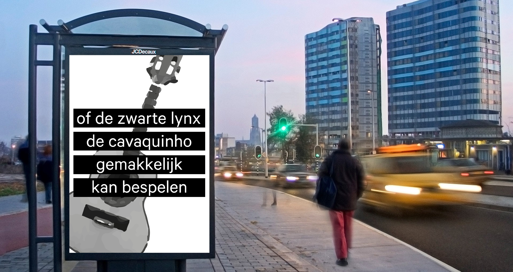
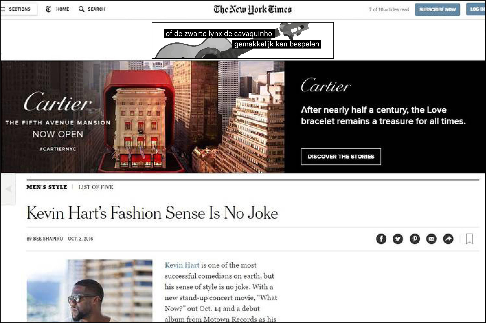

Ik heb een workshop over typografie in InDesign gevolgd. Hiervoor heb ik een eigen pangram gemaakt, een zin waar alle letters van het alfabet in verwerkt zijn. Vervolgens heb ik voor deze pangram een ontwerp gemaakt voor een poster en banner.
 




